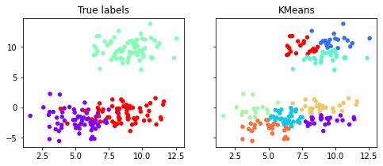
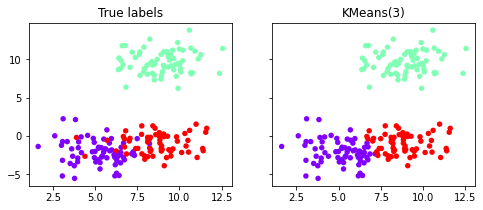
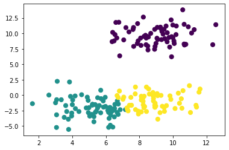
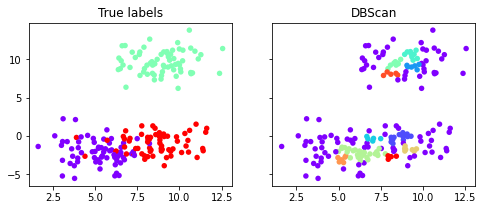
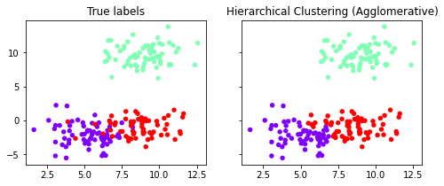
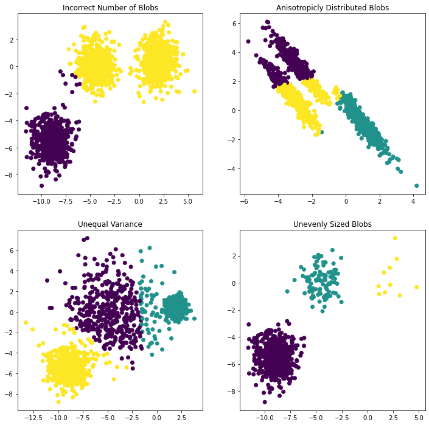

TO-DO:
Contents
TO-DO:¶
Beispiel k-Means
Beispiel Hierarchical Clustering
Beispiel DBSCAN
Beispiel Fuzzy Clustering
Beispiel Self-Organizing Map
Quelle:
Unsupervised Learning¶
Clustering¶
Beispiele:¶
#k-Means
from itertools import permutations
import numpy as np
import sklearn
import sklearn.decomposition as dec
import sklearn.cluster as clu
import sklearn.datasets as ds
import sklearn.model_selection as ms
import matplotlib.pyplot as plt
%matplotlib inline
---------------------------------------------------------------------------
ModuleNotFoundError Traceback (most recent call last)
Input In [1], in <cell line: 4>()
2 from itertools import permutations
3 import numpy as np
----> 4 import sklearn
5 import sklearn.decomposition as dec
6 import sklearn.cluster as clu
ModuleNotFoundError: No module named 'sklearn'
X, y = ds.make_blobs(n_samples=200,
n_features=2,
centers=3,
cluster_std=1.5,
)
def relabel(cl):
"""Relabel a clustering with three clusters
to match the original classes."""
if np.max(cl) != 2:
return cl
perms = np.array(list(permutations((0, 1, 2))))
i = np.argmin([np.sum(np.abs(perm[cl] - y))
for perm in perms])
p = perms[i]
return p[cl]
def display_clustering(labels, title):
"""Plot the data points with the cluster
colors."""
# We relabel the classes when there are 3 clusters
labels = relabel(labels)
fig, axes = plt.subplots(1, 2, figsize=(8, 3),
sharey=True)
# Display the points with the true labels on the
# left, and with the clustering labels on the
# right.
for ax, c, title in zip(
axes,
[y, labels],
["True labels", title]):
ax.scatter(X[:, 0], X[:, 1], c=c, s=30,
linewidths=0, cmap=plt.cm.rainbow)
ax.set_title(title)
km = clu.KMeans()
km.fit(X)
display_clustering(km.labels_, "KMeans")

km = clu.KMeans(n_clusters=3)
km.fit(X)
display_clustering(km.labels_, "KMeans(3)")

from sklearn.metrics import pairwise_distances_argmin
def find_clusters(X, n_clusters, rseed=2):
# 1. Randomly choose clusters
rng = np.random.RandomState(rseed)
i = rng.permutation(X.shape[0])[:n_clusters]
centers = X[i]
while True:
# 2a. Assign labels based on closest center
labels = pairwise_distances_argmin(X, centers)
# 2b. Find new centers from means of points
new_centers = np.array([X[labels == i].mean(0)
for i in range(n_clusters)])
# 2c. Check for convergence
if np.all(centers == new_centers):
break
centers = new_centers
return centers, labels
centers, labels = find_clusters(X, 3, rseed=3)
plt.scatter(X[:, 0], X[:, 1], c=labels,
s=50, cmap='viridis');

db=clu.DBSCAN()
db.fit(X)
display_clustering(db.labels_, "DBScan")

hc=clu.AgglomerativeClustering(3)
hc.fit(X)
display_clustering(hc.labels_, "Hierarchical Clustering (Agglomerative)")

# Author: Phil Roth <mr.phil.roth@gmail.com>
# License: BSD 3 clause
import numpy as np
import matplotlib.pyplot as plt
from sklearn.cluster import KMeans
from sklearn.datasets import make_blobs
plt.figure(figsize=(12, 12))
n_samples = 1500
random_state = 170
X, y = make_blobs(n_samples=n_samples, random_state=random_state)
# Incorrect number of clusters
y_pred = KMeans(n_clusters=2, random_state=random_state).fit_predict(X)
plt.subplot(221)
plt.scatter(X[:, 0], X[:, 1], c=y_pred)
plt.title("Incorrect Number of Blobs")
# Anisotropicly distributed data
transformation = [[0.60834549, -0.63667341], [-0.40887718, 0.85253229]]
X_aniso = np.dot(X, transformation)
y_pred = KMeans(n_clusters=3, random_state=random_state).fit_predict(X_aniso)
plt.subplot(222)
plt.scatter(X_aniso[:, 0], X_aniso[:, 1], c=y_pred)
plt.title("Anisotropicly Distributed Blobs")
# Different variance
X_varied, y_varied = make_blobs(
n_samples=n_samples, cluster_std=[1.0, 2.5, 0.5], random_state=random_state
)
y_pred = KMeans(n_clusters=3, random_state=random_state).fit_predict(X_varied)
plt.subplot(223)
plt.scatter(X_varied[:, 0], X_varied[:, 1], c=y_pred)
plt.title("Unequal Variance")
# Unevenly sized blobs
X_filtered = np.vstack((X[y == 0][:500], X[y == 1][:100], X[y == 2][:10]))
y_pred = KMeans(n_clusters=3, random_state=random_state).fit_predict(X_filtered)
plt.subplot(224)
plt.scatter(X_filtered[:, 0], X_filtered[:, 1], c=y_pred)
plt.title("Unevenly Sized Blobs")
plt.show()
